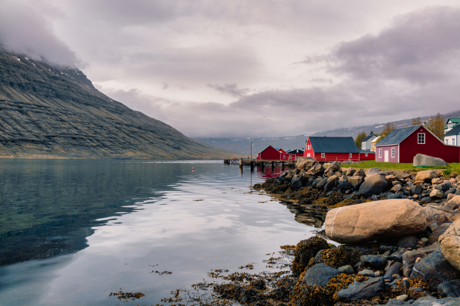
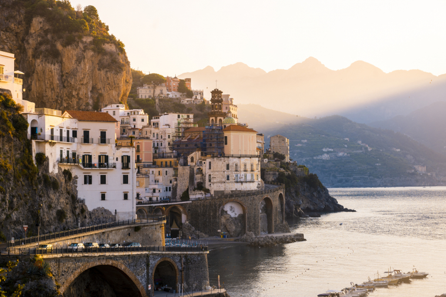
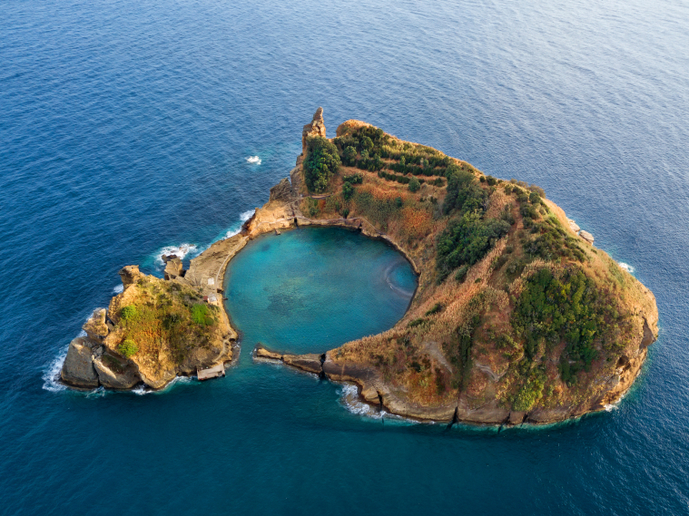

1.Fiordy Zachodnie, Islandia
Moglibyśmy po prostu powiedzieć “Islandia” i nie dodawać nic więcej. Cały ten kraj jest naprawdę spektakularny i każda jego część zachwyca turystów. Ale jeśli szukasz alternatywy dla typowych turystycznych atrakcji, takich jak Złoty Krąg czy Błękitna Laguna, wybierz się na wycieczkę po Fiordach Zachodnich (Westfjords). Są one mniej znane i rzadziej odwiedzane niż inne części Islandii, ponieważ są dosyć rozległe i położone z dala od głównych atrakcji turystycznych. Dlaczego więc warto wybrać się w ten region Islandii? Jest to region słabo zaludniony, odległy i ma inne krajobrazy niż duża część kraju. Jest bardzo surowy, a do poruszania się po nim potrzebny jest samochód, ale warto - chociażby dla zobaczenia wodospadu Dynjandi, czerwonej plaży Rauðasandur, czy urwiska Látrabjarg. Region Fiordów Zachodnich to także świetne miejsce, by na własne oczy zobaczyć lisa arktycznego, czy wybrać się na obserwację fok i wielorybów.

2. Wybrzeże Amalfi, Włochy
Jeśli chcesz odwiedzić to słynne wybrzeże w pobliżu Neapolu, wybierz się tam wczesną wiosną lub jesienią, a będziesz mógł odkrywać kolorowe, kręte uliczki, dziewicze wybrzeża i wspaniałe zachody słońca nad morzem w spokojniejszym tempie i w przyjemnych temperaturach. Większość turystów udających się na wybrzeże Amalfi tłumnie odwiedza Positano i dzieje się tak nie bez powodu - to jedno z napiękniejszych miejsc Europy Południowej. Jednak niewiele osób wie, że równie pięknym miasteczkiem jest Atrani, które leży między dwoma klifami i jest najmniejszą wioską na południu Włoch. To wioska rybacka w pastelowych kolorach, nietknięta przez współczesne życie, pełna brukowanych uliczek, gdzie możesz zachwycać się jej pięknem i w spokoju odpocząć przy kawałku pizzy oraz kieliszku wina przy Piazza Umberto.

3. Azory, Portugalia
Ten portugalski archipelag opisywany jako "Hawaje Europy" może zainspirować do podróży zaledwie jednym zdjęciem. Rozległe doliny, strome klify, rzędy niebieskich hortensji, okazałe wodospady i jedyne w Europie pola herbaciane sprawiają, że Azory są rajem dla amatorów naturalnego piękna i według niektórych uchodzą za najpiękniejsze wyspy świata. Znajdują się tu dwa z 15 portugalskich obiektów Światowego Dziedzictwa Unesco, w tym historyczne miasto Angra do Heroismo na wyspie Terceira i starożytne winnice Pico. Jeśli masz mało czasu i nie wiesz, od czego zacząć, największą i najbardziej dostępną z wysp jest Sao Miguel. Jest ona pełna spektakularnych wulkanicznych krajobrazów, gorących źródeł, szlaków turystycznych i pięknych jezior. To również miejsce numer 1. w Europie jeśli chodzi o warunki do obserwowania wielorybów i delfinów.
